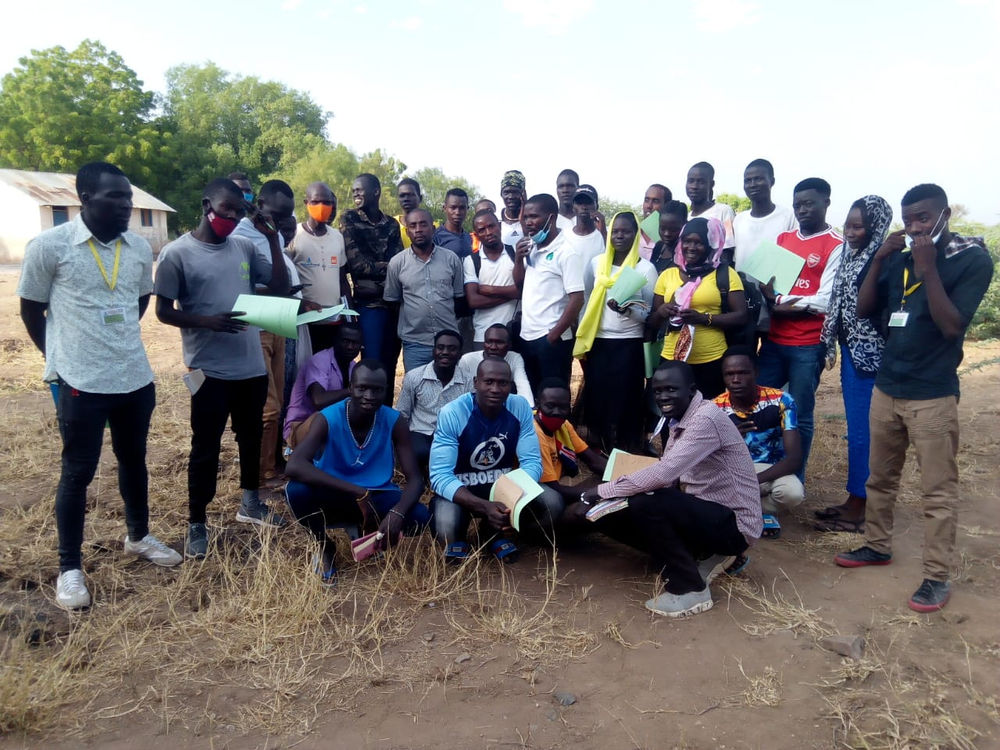
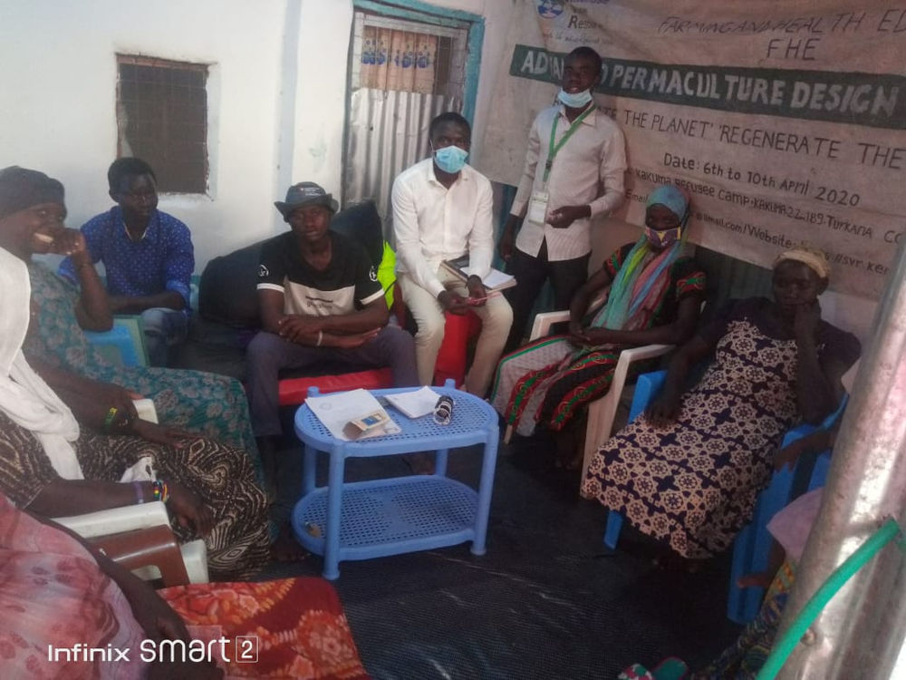

Refugee Economics in Kakuma Kenya
Short description of FHE community based organization.
dear sir/madam
Greetings, I'm MARCELIN MUNGA PETRO a Congolese by nationality being recognized under UNHCR as a refugee in side kakuma refugee camp.
I'm the founder and CEO of FHE organization that mean Farming and Health Education, the organization include 31 members who are contributing their own efforts and ideas in order to push the FHE vision, mission and objectives. FHE is Community Based Organization that works in Kakuma refugee camp to address the dire of health, protection and psychological needs of the children their families and the communities, with one of our strategy focuses being strengthen the community based protection mechanism. Enabling communities to be done active in protection.
In addition FHE includes in its permaculture gardens and trainings, health testing and counseling training course, the pure COUNSELLING TRAINING COURSE, hygiene and sanitation training course component that seeks to improve the over all of adult education in kakuma refugee camp.
In this regard,we are conducting adult education or training vocational center and doing some awareness in the community with the aim being to engage individual discussion on adult education and other programs carried out by the FHE as well as to create self environment for the communities.
With our program objectives, a basic income of SARAFU curbs some of the gaps that are facing. Often our members fall into debt - but when members use Sarafu this helps even in membership monthly contribution, and our group can also offer training to the community for Sarafu. If enough of us refugees trade with each other we don't suffer from missing Kenyan Shillings and debts. I can decide to buy food for my family using Sarafu to fill the gap of missing Shillings - and I can accept the Sarafu back for my teaching or food from my garden - even when we have no SHILLINGS! We all work together as a community.
We kindly request for support from Red Cross and other Humanitarian organizations in helping us spread Sarafu training to the rest of Kakuma to improve and give hope to the refugee community.
best regards
F.H.E CEO MARCELIN MUNGA PETRO